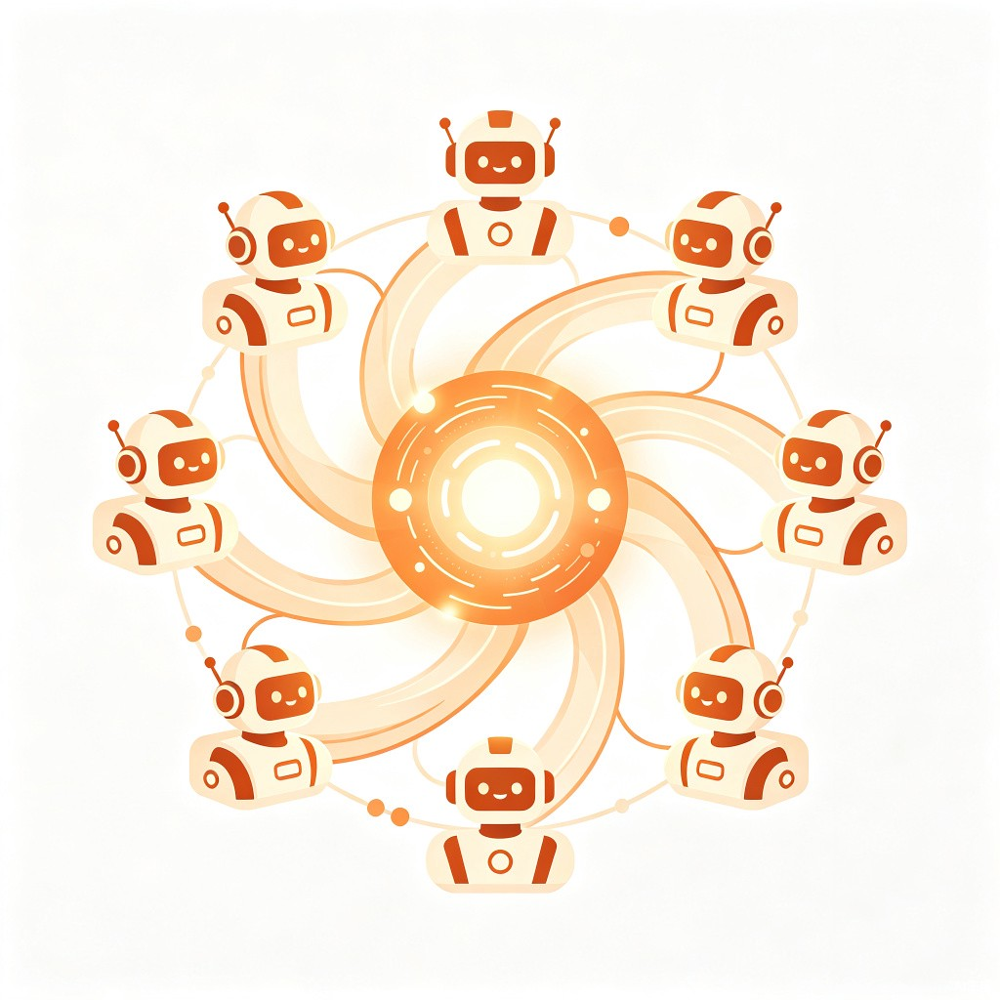

正在为你生成专属报告
AI多智能体正在协作处理你的需求，请稍候…
0%
0%
0%
实时日志
[14:23:01]
[Orchestrator]
接收到用户请求，开始解析…
[14:23:03]
[ProfileAgent]
画像解析完成：数学背景 → 转大模型应用开发
[14:23:05]
[Orchestrator]
分解为3个子任务，启动Worker并行处理
[14:23:08]
[SearchWorker-1]
搜索大模型面试题最新趋势…
[14:23:12]
[SearchWorker-2]
搜索GitHub热门LLM项目…
[14:23:15]
[SearchWorker-3]
整理学习路径资源…
[14:23:22]
[CriticAgent]
检查学习路径质量…
[14:23:25]
[CriticAgent]
⚠ 检测到项目难度偏高，触发重规划
[14:23:28]
[Orchestrator]
启动第2轮迭代优化…
[14:23:35]
[SearchWorker-2]
补充搜索MCP协议相关项目…
预计还需 1分32秒